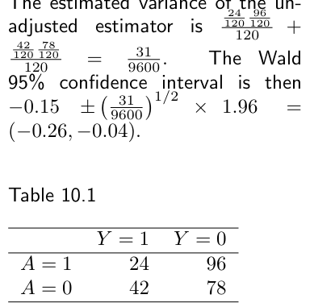
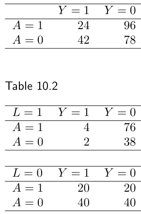

第一部分 · 无模型的因果推断 · Part I — Causal inference without models
第 10 章 · 随机变异
Hernán MA, Robins JM（2020）. Causal Inference: What If. Chapter 10. 本页为中文全文翻译，附译注。
设想一位研究者做了一项随机化试验，要回答的因果问题是："一个人抬头看天，会不会带动路人也抬头？"她发现自己的抬头与路人的抬头之间存在关联。这个关联反映因果效应吗？按随机化试验的定义，这项研究里不该有混杂偏倚。另外也不该有选择偏倚——所有路人的反应（看了或没看）都被记录下来了；也不该有测量偏倚——所有变量都测得完美无缺。然而这里冒出了另一个问题：研究只纳入 4 名路人，每个处理组 2 人。碰巧的是，"抬头"组那 2 人里有 1 人失明，"直视前方"组那 2 人则都不失明。于是，即便这项处理（研究者抬头）对结局（别人抬头）真有很大的平均效应，处理组里也恰好有一半个体对处理免疫。研究人群太小，把处理对结局的估计效应稀释掉了。
因果推断出错的理由在性质上分成两类：系统性偏倚和随机变异。前三章讲的是三类系统性偏倚：选择偏倚、测量偏倚——两者在观察性研究和随机化试验中都可能出现——以及未测混杂，它在随机化试验中不该出现。到目前为止，我们一直把讨论限制在庞大的研究人群上，从而回避了随机变异导致偏倚的可能性。换句话说，我们的一贯做法是假装识别因果效应的唯一障碍只有混杂、选择和测量。是时候面对现实了：在病因学研究中，研究人群的规模很少大到能排除随机变异致偏的可能。这一章讲随机变异，以及我们如何对付它。
10.1 识别与估计
本书前九章关心的都是在近乎无限的研究人群里计算因果效应。举例来说，第 2 章计算心脏移植对死亡率的因果效应时，研究人群只有 20 个人，但我们把其中每一个个体都当作 10 亿个完全相同个体的代表。只要假装可以为研究招来无限多个个体，我们就能忽略随机波动，把注意力全部放在混杂、选择和测量带来的系统性偏倚上。对于那些可以假定研究人群规模实际上无限的问题，统计学家有个名字：识别问题（identification problems）。
到目前为止，我们把因果推断整个化归为一个识别问题。唯一目标一直是识别（或者按我们常说的，"算出"）处理 A 对结局 Y 的平均因果效应。可识别性（identifiability）的概念最早在 3.1 节介绍，随后在 7.2 节和 8.4 节继续讨论；在那些地方我们还引入了若干条件，即使研究人群可以任意大，这些条件一般也是识别因果效应所必需的。它们叫作识别条件（identifying conditions）：可交换性（exchangeability）、可阳性性（positivity）和一致性（consistency）。
忽略随机变异，在教学上或许便于引出系统性偏倚，但同时也极不现实。在真实的研究项目里，研究人群并非实际上无限，因此我们不能无视随机变异带来的可能性。为此让我们回到那个 20 人的心脏移植与死亡率研究：13 名接受治疗者中有 7 人死亡。
设想我们的 20 人研究人群可以被视为从一个超级总体（super-population）里抽出的随机样本，而这个超级总体大到相对于研究人群而言可以有效地视为无限。再设想我们的目标是对超级总体作推断。举例来说，我们也许想对超级总体的概率（或比例）Pr[Y = 1|A = a] 作推断。我们把超级总体中感兴趣的参数——在这个例子里就是概率 Pr[Y = 1|A = a]——称为估计目标（estimand）。估计量（estimator）是一条规则，它接受从超级总体抽取的任意样本的数据，为该估计目标产生一个数值。某个特定样本所产生的这个数值，就是该样本给出的估计值（estimate）。在接受处理水平 a 的个体中发生结局者的样本比例 Pr[Yca=1 = 1 | A = a]，就是超级总体概率 Pr[Y = 1|A = a] 的一个估计量。我们这个样本给出的估计值是 Pr[Yca=1 = 1 | A = a] = 7/13。更具体一点，我们说 7/13 是一个点估计（point estimate）。估计值取什么，取决于从超级总体中随机抽到的究竟是哪 20 个人。
正如第 1 章非正式地定义过的：若随着样本量增加，估计值（任意地）越来越接近参数，就说估计量对某个估计目标是一致的（consistent）（形式定义见技术要点 10.1）。因此样本比例 Pr[Yca=1 = 1 | A = a] 一致地估计了超级总体的概率 Pr[Y = 1|A = a]；也就是说，我们研究人群中的个体数 n 越大，Pr[Y = 1|A = a] − Pr[Yca=1 = 1 | A = a] 的绝对值预期就越小。前几章只关心识别；从现在起我们要关心统计估计了。即便是一致估计量，给出的点估计也可能离超级总体的真值很远。点估计与超级总体比例真值之间的差距，在研究人群规模相对于超级总体越小的时候，越容易变得很大。因此来自更大研究人群的估计自然更值得信赖。在不存在系统性偏倚的情况下，统计理论允许我们以点估计周围一个置信区间的形式，把这种信心量化出来。研究人群越大，置信区间越窄。构造一个 95% 置信区间的常见办法，是用以点估计为中心的 95% Wald 置信区间。算法如下。
第一步，在"研究人群是大得多超级总体的随机样本"这一假定下，估计点估计的标准误。第二步，点估计加上 1.96 倍估计标准误，得到 95% Wald 置信区间的上限；点估计减去 1.96 倍估计标准误，得到下限。举例来说，设我们的估计量为 Pr[Yca=1 = 1 | A = a] = p̂，超级总体参数为 Pr[Y = 1|A = a] = p。它的标准误是 √( p(1−p) / n )（即二项分布的标准误），因而它的估计标准误为 √( p̂(1−p̂) / n ) = √( (7/13)(6/13) / 13 ) = 0.138。回顾一下，基于估计量 θ̂ 的参数 θ 的 Wald 95% 置信区间是 θ̂ ± 1.96 × se(θ̂)，其中 se(θ̂) 是 θ̂ 的（精确的，或大样本的）标准误，1.96 是均值为 0、方差为 1 的标准正态分布的 97.5% 上分位数。因此我们这个估计的 95% Wald 置信区间是 0.27 到 0.81。95% Wald 置信区间的长度和中心位置会随样本而变。
如果估计目标被包含在区间内的频率在 95% 的随机样本中出现，我们就说这个置信区间是校准的（calibrated）；若被包含的样本超过 95%，则是保守的（conservative）；否则是反保守的（anticonservative）。若对真参数的任意取值，该区间都至少以 95% 的概率覆盖真参数，即它要么校准要么保守，我们就说这个置信区间是有效的（valid）。我们希望选取宽度最小的那个有效区间。
置信区间的有效性是用"从超级总体反复抽样时的覆盖频率"来定义的，可我们做一项研究时只看到了其中一个样本。我们为什么要关心那些没看到的、假想中的其他样本里会发生什么？一个重要的回答是，置信区间的定义本身还蕴含了下面这件事。设想我们和所有同事余生都在不停做研究。在每一项新研究里，我们都为感兴趣的参数构造一个有效的 95% 置信区间。那么在临终时我们可以回头看所有做过的研究，并得出结论：这些感兴趣的参数至少在 95% 的研究里被"关在"——或者说被覆盖于——相应的置信区间之内。遗憾的是，我们没有任何办法把那个（最多）5% 的、区间没能罩住超级总体真值的研究识别出来。
要强调的是，单项研究给出的 95% 置信区间并不意味着"估计目标落在该区间内的概率是 95%"。在我们的例子里，我们不能断定估计目标位于 0.27 与 0.81 之间的概率为 95%。估计目标是固定的，这就意味着它要么落在这个特定区间（0.27, 0.81）里，要么不落在里面。在这个意义上，估计目标被该区间覆盖的概率不是 0 就是 1。置信区间只有频率学派意义上的解释；它的水平（比如 95%）指的是在一批研究中（或某项研究的假想重复中）该区间罩住所感兴趣的、事先未知的超级总体真值的频率。
与频率学派的 95% 置信区间不同，贝叶斯的 95% 可信区间（credible interval）可以被解读为"估计目标落在该区间内的概率是 95%"。但对贝叶斯主义者而言，概率并不是定义为在假想重复中的频率，而是定义为信念程度。本书采用频率学派的概率定义。关于贝叶斯区间的更多讨论，见精细辨析 11.2。
置信区间常被分为小样本置信区间与大样本置信区间。小样本有效（保守或校准）的置信区间，指的是在它有定义的所有样本量上都有效。小样本校准的置信区间有时称为精确置信区间（exact confidence interval）。大样本（等价地，渐近）有效的置信区间，则指它只在大样本下有效；大样本校准的 95% 置信区间，指其覆盖率随着样本量增加任意接近 95%。上面提到的 Pr[Y = 1|A = a] = p 的 Wald 置信区间是一个大样本校准的置信区间，但不是小样本有效的置信区间。（p 确实存在小样本有效的置信区间，只是实践中很少用。）样本量小时，像我们例子中那个 Wald 95% 置信区间这样的大样本有效区间可能并不有效。本书中我们说"95% 置信区间"时，指的是大样本有效的置信区间（比如 Wald 区间），除非另有说明。另见精细辨析 10.1。
然而，并不是所有一致估计量都能用来给一个有效的 Wald 置信区间定中心，即便在大样本里也不行。多数统计使用者会把"能把有效 Wald 置信区间定中心"的估计量称为无偏的，把做不到的称为有偏的（细节见技术要点 10.1）。目前我们就把"偏倚"一词等同于"无法给有效 Wald 置信区间定中心"。另外别忘了，置信区间只量化随机误差带来的不确定性；因此在存在系统性偏倚时，我们对置信区间的信心可能过强（细节见精细辨析 10.2）。
10.2 因果效应的估计
设想我们的心脏移植研究是一项边缘随机化试验（marginally randomized experiment），并且那 20 个人是一个近乎无限的、我们感兴趣的超级总体中所有人的随机样本。再设想超级总体中的所有个体都被随机分配到 A = 1 或 A = 0，并且所有人都遵守了被分配的处理。那么超级总体中治疗者与未治疗者之间的可交换性成立，即 Pr[Ya=1 = 1] = Pr[Y = 1|A = a]，因而超级总体中的因果风险差 Pr[Ya=1 = 1] − Pr[Ya=0 = 1] 等于超级总体中的关联风险差 Pr[Y = 1|A = 1] − Pr[Y = 1|A = 0]。
由于我们的研究人群是超级总体的随机样本，在观测处理值 A = a 的个体中发生结局者的样本比例 Pr[Yca=1 = 1 | A = a]，是超级总体概率 Pr[Y = 1|A = a] 的一个无偏估计量。由于超级总体中存在可交换性，样本比例 Pr[Yca=1 = 1 | A = a] 也是 Pr[Ya=1 = 1] 的无偏估计量。于是，对因果零假设 Pr[Ya=1 = 1] = Pr[Ya=0 = 1] 作传统统计"检验"，就归结为比较样本比例 Pr[Y = 1 | A = 1] = 7/13 与 Pr[Y = 1 | A = 0] = 3/7。标准统计方法同样可以用来计算超级总体中因果风险差和因果风险比的 95% 置信区间，它们的估计值分别是 (7/13) − (3/7) 与 (7/13)/(3/7)。在观察性研究中，稍复杂一些但同样标准的统计程序，被用来为标准化、逆概率加权（IP weighted）或分层的关联度量构造置信区间。
关于随机化试验中的抽样变异，还有另一种思考方式。设想只有研究人群中的个体——而不是超级总体中的所有个体——被随机分配到 A = 1 或 A = 0。由于存在随机抽样变异，我们不能指望可交换性在我们的样本中精确成立。举例来说，设想只有我们研究的那 20 个人被随机分配到心脏移植（A = 1）或药物治疗（A = 0）。再设想在随机化时可以把每个人归为预后良好或预后不良。若 A = 0 组与 A = 1 组包含的预后不良者比例恰好相同，我们就说这两组是可交换的。碰巧的话，被分到 A = 1 的 13 人中可能有 2 人预后不良，被分到 A = 0 的 7 人中可能有 3 人预后不良。但如果把样本量加大，那么 A = 1 组与 A = 0 组之间这种相对不平衡很可能就会减小。
在这样的构想下，推断有两个可能的目标。第一，研究者可能对超级总体是否存在不抱任何信念，把推断限制在那个实际被随机化的样本上。这被称为基于随机化的推断（randomization-based inference），它需要处理一些超出本书范围的技术细节。第二，研究者可能仍然对从超级总体作推断感兴趣，即对研究样本被随机抽取自的那个超级总体作推断。从推断的角度看，后一种情形在数学上恰好等价于本节开头所描述的抽样变异的构想——即整个超级总体都被随机分配了处理。换句话说，先随机化后随机抽样，等于先随机抽样后随机化。关于基于随机化的推断，可参看 Robins（1988）与 Greenland（1991）。
很多情况下我们对第一个目标并不感兴趣。为什么？设想有一项研究，比较两种一线治疗对癌症患者死亡率的效应。研究结束后我们也许会判定这两种治疗中某一种更值得先用，但这条信息对已经参与研究的实际病人来说已经无关紧要了。研究的目的不是为研究中的病人选择治疗，而是为一群与研究样本相似、但规模更大的个体服务。到目前为止我们都假定存在一个更大的群体——超级总体——研究参与者是从中随机抽取的。现在我们转向超级总体这个概念本身。
10.3 超级总体的神话
正如第 1 章讨论过的，随机性有两个来源：抽样变异和非确定性的反事实。下面我们把两者都谈一谈。
考虑我们那个估计 Pr[Yca=1 = 1 | A = 1] = p̂ = 7/13，它针对的超级总体风险是 Pr[Y = 1|A = a] = p。几乎所有研究者都会为概率 p 报告一个二项置信区间 p̂ ± 1.96 √( p̂(1−p̂)/n ) = 7/13 ± 1.96 √( (7/13)(6/13)/13 )。若问他们为什么给这样的区间，他们会说这是为了把随机变异带来的不确定性纳入进来。但这些区间只有在 p̂ 具有二项抽样分布时才有效。于是我们必须问：p̂ 究竟在什么时候才会具有二项抽样分布？事实上有两个情形。
- 情形 1。研究人群从一个本质上无限的超级总体（有时称为源总体或目标总体）中随机抽取，而我们的估计目标是超级总体中接受治疗者里发生结局者的比例
p = Pr[Y = 1|A = 1]。这时在数学上确实成立：在从超级总体治疗者中反复抽取的、样本量为 13 的重复随机样本中，13 人里发生结局的人数是成功概率为Pr[Y = 1|A = 1]的二项随机变量。因此上一节算出的 95% Wald 置信区间对Pr[Y = 1|A = 1]是渐近校准的。这就是我们迄今一直采用的模型。 - 情形 2。研究人群并非从一个假想的超级总体中抽取。取而代之的是：(i) 13 名接受治疗的个体中，每一个个体
i都有一个各自的非确定性（随机）反事实概率pia=1；(ii) 受试者i的观测结局Yi = Yia=1发生的概率是pia=1；并且 (iii)pia=1对 13 名治疗者中的每一个都取同一个值，比方说p。那么 13 名治疗者中发生结局的人数就是成功概率为p的二项随机变量，上一节算出的 95% 置信区间因而对p是渐近校准的。
Robins（1988）对这两个情形有更详细的讨论。上文中反复出现的"i.i.d."（独立同分布）这个说法，含义就是：我们的数据是从某个超级总体中抽出的、样本量为 n 的随机样本。
情形 1 假定了一个假想的超级总体，情形 2 则没有。但情形 2 是站不住脚的：由于个体间风险的差异，13 名治疗者中"接受治疗后发生结局的概率" pia=1 几乎肯定各不相同。举例来说，我们会预期死亡概率 pia=1 多少取决于个体的基因构成。如果 pia=1 不是常数，那么在实际研究人群中，我们感兴趣的估计目标一般就是这 13 个 pia=1 的平均值，比方说 p。可这时，治疗者中发生结局的人数就不再是成功概率为 p 的二项随机变量，上一节为 p 算出的 95% 置信区间也就不是渐近校准的，而是保守的。
因此，任何为 Pr[Y = 1|A = a] 报告二项置信区间、同时又承认风险存在个体间差异的研究者，都在暗中假定情形 1：研究个体抽自一个近乎无限的超级总体，且所有推断都是针对该超级总体的量。在情形 1 下，无论底层反事实是确定性的还是随机的，13 名治疗者中发生结局的人数都是二项变量。
在假想的超级总体情形下工作，其好处是：结论不依赖于世界究竟是确定性的还是非确定性的。另一方面，超级总体一般来说是个虚构；在大多数研究中，个体并不是从任何近乎无限的人群中随机抽取的。那么超级总体的神话为什么能延续下来？一个原因是它带来了简单的统计方法。
第二个原因与外推有关。正如上一节提到的，研究者一般希望把他们在研究人群（比如心脏移植研究中的那 20 个人）上发现的治疗效应，外推到某个大的目标人群（比如希腊万神殿里所有不朽者）。最简单的做法就是假定研究人群是从一个由潜在受治者构成的更大总体中随机抽取的。既然这是个虚构，按情形 1 算出的 95% 置信区间就应当被解读为：如果研究个体确实是从一个近乎无限的超级总体中随机抽出的（往往与事实不符），那么该区间覆盖的是超级总体的参数。换句话说，在情形 1 下得到的置信区间应当被看作"假如……会怎样"的陈述。
由上述可以推出：如果潜在受治者的"池子"并不比研究人群大多少，或者潜在受治者的目标人群被认为与研究人群的差异大到无法用抽样变异来解释，那么研究者可能并不愿意接受情形 1。本节接下来就接受"个体是从超级总体中随机抽取的"这一假定，并考察在这一背景下随机变异对因果推断的后果。我们先在一个简单的随机化试验里探讨这个问题。
10.4 条件性"原则"
表 10.1 汇总了一项随机化试验的数据，用以估计处理 A（1：是，0：否）对 1 年死亡风险 Y（1：是，0：否）的平均因果效应。试验纳入 240 名个体，两个治疗组各 120 人。关联风险差为 Pr[Y = 1|A = 1] − Pr[Y = 1|A = 0] = 24/120 − 42/120 = −0.15。假设试验是在一个近乎无限的超级总体中进行的，治疗者与未治疗者之间可交换，即 Ya ⊥⊥ A，于是关联风险差等于因果风险差 Pr[Ya=1 = 1] − Pr[Ya=0 = 1]。设想研究者算出了点估计 −0.15 周围的一个 95% 置信区间 (−0.26, −0.04)，并发表论文，得出结论说该处理有益，因为它把死亡风险降低了 15 个百分点。
未调整估计量的估计方差是 (24/120)(96/120)/120 + (42/120)(78/120)/120 = 31/9600，因此 Wald 95% 置信区间为 −0.15 ± (31/9600)1/2 × 1.96 = (−0.26, −0.04)。

Y = 1），96 人存活；未接受治疗者 120 人中 42 人死亡，78 人存活。关联风险差为 24/120 − 42/120 = −0.15。可是这项研究人群只有 240 个人，因此完全可能由于偶然，治疗者与未治疗者并不完全可交换。随机分配处理并不保证由试验中这 240 人构成的样本里精确可交换；它只保证偏离可交换性的部分来自随机变异，而非系统性偏倚。事实上，可以把"我们对样本中未测基线风险因素与处理 A 之间偶然相关性的无知"所带来的不确定性，看作构成该置信区间长度 0.22 的一部分。
几个月后，研究者得知还收集了第三个变量——吸烟 L（1：是，0：否）——的信息，决定看一看。按 L 分层的试验数据见表 10.2。令研究者吃惊的是：吸烟者中接受治疗者的比例（80/120）是不吸烟者中（40/120）的两倍，这提示治疗者与未治疗者并不可交换，因此有必要对吸烟作调整。当研究者用分层法调整时，吸烟者中的关联风险差 Pr[Y = 1|A = 1, L = 1] − Pr[Y = 1|A = 0, L = 1] 等于 0；不吸烟者中的关联风险差 Pr[Y = 1|A = 1, L = 0] − Pr[Y = 1|A = 0, L = 0] 也等于 0。调整后的分析提示：在吸烟者与不吸烟者中处理都没有效应，尽管边际风险差 −0.15 提示研究人群中存在一个净获益效应。

L 分层。吸烟者中 120 人接受治疗、40 人未接受；不吸烟者中 40 人接受治疗、80 人未接受。两层内的关联风险差均为 0。这些新发现让研究者心神不宁。要么是有人在分配处理时没有真正随机（malfeasance，不端行为），要么是随机化没有带来近似可交换性（运气非常非常差）。研究者之间爆发了一场争论：该不该撤稿并更正结果？如果问题源于不端行为，大家一致认为答案是肯定的——那就会存在吸烟带来的混杂，效应估计应当对吸烟作调整。但大家也都同意，考虑到研究的质控程序，不端行为不可能发生。因此很清楚，吸烟与处理之间的关联完全出于糟糕的运气。即便如此，他们该不该撤稿并更正结果？
一位研究者说不该撤稿。他的论证是这样的："好吧，随机化在吸烟这件事上出错了，但我们凭什么厚此薄彼、看重调整估计量而看轻未调整估计量？很可能，其他未测因素 U 上的不平衡正好抵消了 L 上偶然不平衡的影响，所以未调整估计量在超级总体中仍然更接近真值。"另一位研究者说他们应当撤稿，报告调整后的零结果。她的论证是这样的："我们应当对 L 作调整，因为 L 与 A 之间的强关联在我们的效应估计里引入了混杂。在 L 的各个水平内部，我们各自拥有了一个小型随机化试验，围绕相应点估计的置信区间会反映在给定 L 条件下 U 与 A 可能相关所带来的不确定性。"
要判断哪位研究者正确，先把事实摆清楚。为简明起见，假定真实的因果风险差在各 L 层之间是常数，并设想我们可以把这个随机化试验跑上万亿次。然后我们只挑出（也就是"条件于"）那些 L 与处理 A 的关联像观测数据中那样强正相关的重复试验。我们会发现：在 L 的每一层内部，在这些重复试验中，某个给定的处理前风险因素 U 与 A 正相关的重复次数，与 U 与 A 负相关的重复次数基本相等。（即便 U 与 L 在超级总体与研究数据中都高度相关，这一点依然成立。）
其后果是：处理效应的调整估计量无偏，而在这些重复试验上取平均时，未调整估计量严重有偏。
无条件地——在实验的全部重复上取平均——调整估计量与未调整估计量都是无偏的，但调整估计量的方差小于未调整估计量的方差。也就是说，调整估计量既条件无偏，又无条件更有效。这一无条件效率来自一个事实：当有 L 的数据时，调整估计量就是风险差的最大似然估计（MLE）。因此无论从条件还是无条件的角度看，以调整估计量为中心的 Wald 区间都是更好的分析，论文需要撤稿。第二位研究者是对的。
把观察到的 L–A 关联作为条件来处理的思想，在统计学文献里被称为条件性原则（conditionality principle）。在统计学中，观测到的 L–A 关联被称为因果风险差的辅助统计量（ancillary statistics）。条件性原则断言：关于某个参数的推断应当在辅助统计量的条件下进行（细节见技术要点 10.2 与 10.3）。
在上面关于随机化试验结果的讨论中，有些研究者是凭直觉遵循了条件性原则的，因为他们认为：如果一个估计量无法在任何辅助统计量的条件下给有效 Wald 置信区间定中心，它就是有偏的。对这类研究者而言，我们先前对"偏倚"的定义还不够严格；他们会说，一个估计量无偏，当且仅当它能在辅助统计量的条件下给有效 Wald 区间定中心。技术要点 10.5 论证说，大多数研究者其实都在不自觉地遵循条件性原则。
当有人抛出那个频率学派的反驳——"对 L 作调整没有必要，因为无条件地——在实验的所有重复上——未调整估计量是无偏的"——那些凭直觉应用条件性原则的研究者会恰当地回敬："别的假想研究中出现各种 L–A 关联，为什么就该影响我在自己研究里该怎么做？在我的研究里 L 扮演了混杂因素的角色，必须通过调整来消除偏倚。"只要像本例的随机化试验那样，所测混杂因素的数量不多，这个论证对随机化试验和观察性研究都是很有说服力的。然而当所测混杂因素很多时，严格遵循条件性原则就不再明智了。
回到正文。把这两层的数据代进技术要点 10.5 的公式：L = 1 层的方差 V̂1obs = (4/80)(76/80)/80 + (2/40)(38/40)/40 = 1.78 × 10−3，L = 0 层的方差 V̂0 = (20/40)(20/40)/40 + (40/80)(40/80)/80 = 9.38 × 10−3，于是 V̂ = V̂0V̂1/(V̂0+V̂1) ≈ 0.0387。共同风险差的调整点估计为 0，因此它的 Wald 95% 置信区间是 0 ± 0.0387 × 1.96 = (−0.076, 0.076)——比未调整情形的 (−0.26, −0.04) 窄得多，而且这次不包含零。
10.5 维度灾难
前面几节的推导都建立在一个渐近理论之上，而这个理论假定 L 的层数相对于样本量来说很小。本节我们研究另一种情形：向量 L 的层数可以非常大，甚至远大于样本量。
假设研究者测量的不是 1 个而是 100 个处理前二值变量，那么由这 100 个变量组合而成的处理前变量 L = (L1, …, L100) 就有 2100 个层。像这样处理前变量的取值组合极多，我们说数据具有高维性（high dimensionality）。为简明起见，假设不存在由 L 引起的加性效应修饰，即超级总体的风险差 Pr[Y = 1|A = 1, L = l] − Pr[Y = 1|A = 0, L = l] 在这 2100 个层上是常数。特别地，假设这个层别特异的常风险差为 0。
研究者又面临要不要撤稿、报告分层风险差估计的问题。到这一步他们已经同意，应当遵循条件性原则，因为未调整的风险差 −0.15 是条件有偏的。然而他们发现：当有 2100 个层时，基于调整估计量的风险差 95% 置信区间比基于未调整估计量的宽得多。这与 L 只有两个层时的结果恰好相反。事实上，基于调整估计量的 95% 置信区间可能宽到完全不带信息。
原因不难看清：由于 2100 远大于个体数（240），最多只会有少数几个 L 的层里同时含有接受处理者和未接受处理者。假设 2100 个层中只有一个层含有 1 名治疗者与 1 名未治疗者，其余任何层都不同时含有一名治疗者和一名未治疗者。那么，基于调整估计量的共同风险差 95% 置信区间是 (−1, 1)，因而完全不带信息——因为在那个唯一同时有治疗者和未治疗者的层里，经验风险差可以是 −1、0 或 1，取决于每个人 Y 的取值。相比之下，基于未调整估计量的共同风险差 95% 置信区间仍然如前为 (−0.26, −0.04)，因为它的宽度不受"测了更多协变量"这一事实的影响。这些结果反映出：只有在个体数与未知参数个数之比足够大时，调整估计量才保证比未调整估计量更有效；一个常用的经验法则是这个比值至少取 10，不过最小比值还取决于数据的具体特点。
研究者该怎么办？在只有单个二值变量的简单设定里，他们为了做对的事——遵循条件性原则——而把自己逼进了死角；到了高维设定里就彻底动不了。这就是维度灾难（curse of dimensionality）：给定全部 100 个协变量取条件之后，边际估计量仍然有偏，而此时条件估计量已经不提供任何信息。这说明：条件性在简单例子中如此有说服力，不应被抬升为一条原则，因为它在高维模型里根本没法贯彻到底。虽然我们是在随机化试验的语境下讨论这个问题，但同样的讨论完全适用于观察性研究（见技术要点 10.6）。Robins 与 Ritov（1997）对维度灾难给出了技术性的描述。
解决维度灾难是个困难问题，也是一个活跃的研究领域。第 18 章我们回顾这方面研究并给出一些实用建议。第 11 章至第 17 章则提供了在因果推断中使用模型所需的背景知识。